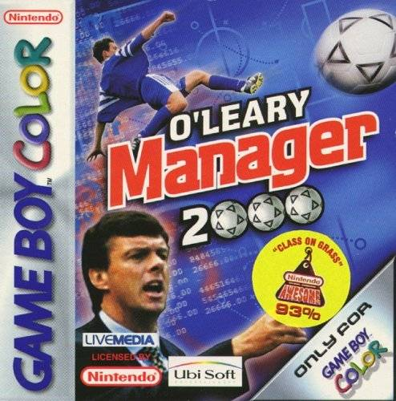

O'Leary Manager 2000
O'Leary Manager 2000
Details
|  | |
| Spielzeit | Nicht gespielt |
| Letzte Aktivität | Nie |
| Hinzugefügt | 05.10.2022 23:15:48 |
| Modifiziert | 12.12.2022 1:33:29 |
| Fertigstellungsstatus | Not Played |
| Bibliothek | Playnite |
| Quelle | |
| Plattform | Game Boy Color |
| Veröffentlichungsdatum | 2000 |
| Community Bewertungen | |
| Kritiker Punkte | |
| Benutzerwertung | |
| Genre | Simulation Sport |
| Entwickler | |
| Verleger | |
| Eigenschaft | |
| Links | Wikipedia |
| Tag | [EMT] Logo Missing |
Beschreibung
O'Leary Manager 2000 is a football player-manager game released in 2000 for the Game Boy Color. The player can choose whether they want to focus on the management side of football, play the matches themselves on the game's 2D match engine, or combine the two features for a more in-depth experience. It is endorsed by Irish football manager David O'Leary, who was managing Leeds United A.F.C. at the time of the game's release.
The management side of O'Leary Manager 2000 is very comprehensive when compared to similar Game Boy Color games. The player can choose from 240 fully licensed teams from the top two leagues in England, France, Italy, Spain, Germany and the Netherlands to play as or manage, with each team having 16 players in their squad. There is also the option to promote a number of fictional youth team players. However, most of the youth team players are of low ability, so could only realistically be used for back-up when managing a decent quality team.
As with any football management game, the transfer market can often play a key role in whether the team achieves success. The player's selected team starts with either 10.5m or 5.5m to spend, depending on whether they were in the first or second tier of their country's football hierarchy. The player can also recoup some money by selling players to other teams. This is done by first offering the footballer for sale at a chosen price, from which interested clubs would then place offers that the player could choose to accept or not. Once a price is agreed, the footballer transfers clubs instantly. The values of footballers alternate greatly during the game, with the then Real Betis striker Denílson being the most expensive player at the start of the game. An unfortunate bug in the game allows the player to gain a huge sum of money (around 70m) if the club goes into a certain amount of debt, which pretty much negates the need for financial planning.
The club's board of directors constantly give assessments as to how they think the club is progressing under your management. This involves a short statement visible at the menu screen. Other features available the menu screen include options to change you team line-up, formation and tactics; all vital when creating a successful team.
Similarly, you can decide what methods of training your team will undertake for the coming week. You have the option to "do training", which generally increase the statistics of your players (but at the risk of injuring them) or to concentrate on fitness training (which helps players stay fit and injured players to recover quicker). Alternatively, you may choose to skip training entirely for the week. You also have the option to view various statistics, such as league tables from around the world, top goalscorers and to view the squads of all available teams on the game.
The management side of O'Leary Manager 2000 is very comprehensive when compared to similar Game Boy Color games. The player can choose from 240 fully licensed teams from the top two leagues in England, France, Italy, Spain, Germany and the Netherlands to play as or manage, with each team having 16 players in their squad. There is also the option to promote a number of fictional youth team players. However, most of the youth team players are of low ability, so could only realistically be used for back-up when managing a decent quality team.
As with any football management game, the transfer market can often play a key role in whether the team achieves success. The player's selected team starts with either 10.5m or 5.5m to spend, depending on whether they were in the first or second tier of their country's football hierarchy. The player can also recoup some money by selling players to other teams. This is done by first offering the footballer for sale at a chosen price, from which interested clubs would then place offers that the player could choose to accept or not. Once a price is agreed, the footballer transfers clubs instantly. The values of footballers alternate greatly during the game, with the then Real Betis striker Denílson being the most expensive player at the start of the game. An unfortunate bug in the game allows the player to gain a huge sum of money (around 70m) if the club goes into a certain amount of debt, which pretty much negates the need for financial planning.
The club's board of directors constantly give assessments as to how they think the club is progressing under your management. This involves a short statement visible at the menu screen. Other features available the menu screen include options to change you team line-up, formation and tactics; all vital when creating a successful team.
Similarly, you can decide what methods of training your team will undertake for the coming week. You have the option to "do training", which generally increase the statistics of your players (but at the risk of injuring them) or to concentrate on fitness training (which helps players stay fit and injured players to recover quicker). Alternatively, you may choose to skip training entirely for the week. You also have the option to view various statistics, such as league tables from around the world, top goalscorers and to view the squads of all available teams on the game.